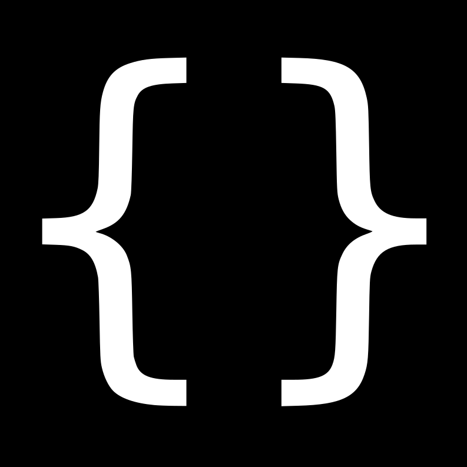
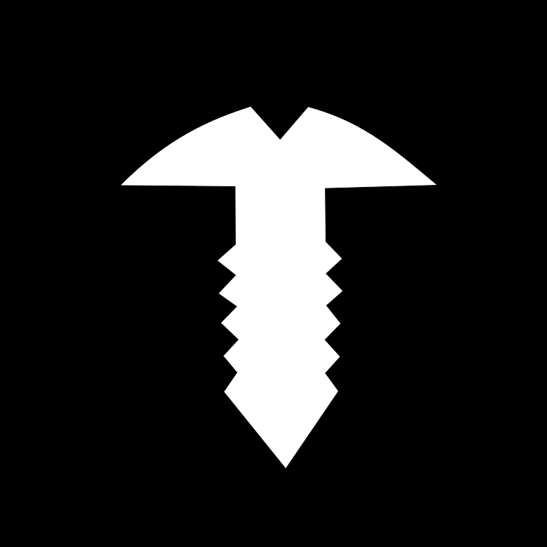
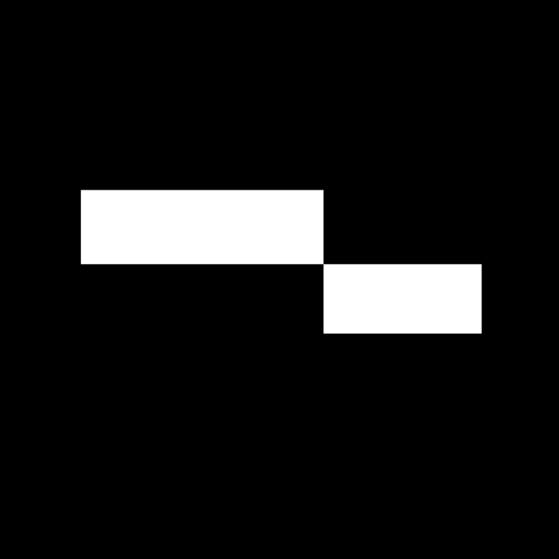
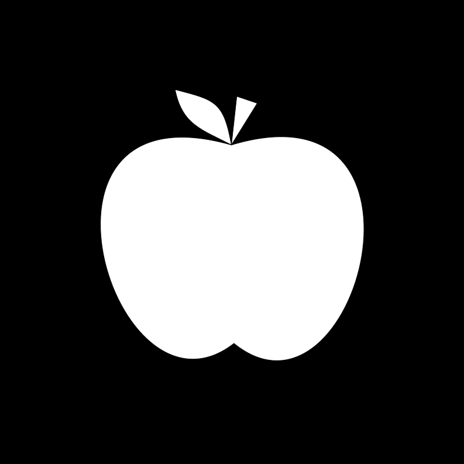

Acerca de mí
¡Hola! Soy Juan Andrés. Soy técnico en informática y geek de las computadoras. Actualmente hago trabajos como freelancer bajo el nombre "Conjunto Solución".
Me especializo en el análisis, programación, diseño y reparaciones. Pero mi esencia está en conocer y hablar con nuevas personas, ayudar a los demás, y nunca dejar de aprender.
¡No dude en contactarse conmigo! Recibirá una respuesta inmediatamente.
*Actualmente en busca de un empleo
Mis habilidades
-

Crear aplicaciones web
Usando variedad de tecnologías, como React, Express, PHP, Apache, NGINX, etc.
-
Crear aplicaciones para Windows
Usando C# con WPF o WinForms.
-
Crear y optimizar bases de datos
Usando ER/Studio, MySQL, PostgreSQL y similares.
-

Reparación de computadoras
Trabajo principalmente con laptops, celulares e impresoras.
-
Idiomas
Aprendí a hablar y escribir en inglés y japonés por mi cuenta a un nivel avanzado.
-

Trabajo en equipo y planificación
Fui líder de proyectos colaborativos usando GitHub, GanttProject y Notion.
-

Enseñar
He dictado clases de programación y de matemáticas en la escuela secundaria y la facultad.
-
Diseño de logos e íconos
Usando Inkscape y GIMP.
-
Análisis y optimización de procesos
Mediante entrevistas y estudios estadísticos.
Historial
- 2025
- 🔵 Hago trabajos como freelancer de desarrollo, consultoría y reparaciones
- 2024
- 🔵 Cursé el segundo año de la carrera de Analista de Sistemas
- 2023
- 🔵 Participé en promociones publicitarias de la Universidad de Misiones
- 🔵 Obtuve la certificación de Auxiliar en Informática
- 2022
- 🔵 Finalista en las olimpiadas nacionales de programación
- 🔵 Fui pasante en CVI y el Hotel Casino Iguazú
- 🔵 Me recibí en la E.P.E.T. Nº4 como Técnico en Informática, habiendo obtenido el mejor promedio por 13 años consecutivos
- 2021
- 🔵 Fui ganador de la Copa Robótica Misiones (categoría robot-minisumo)